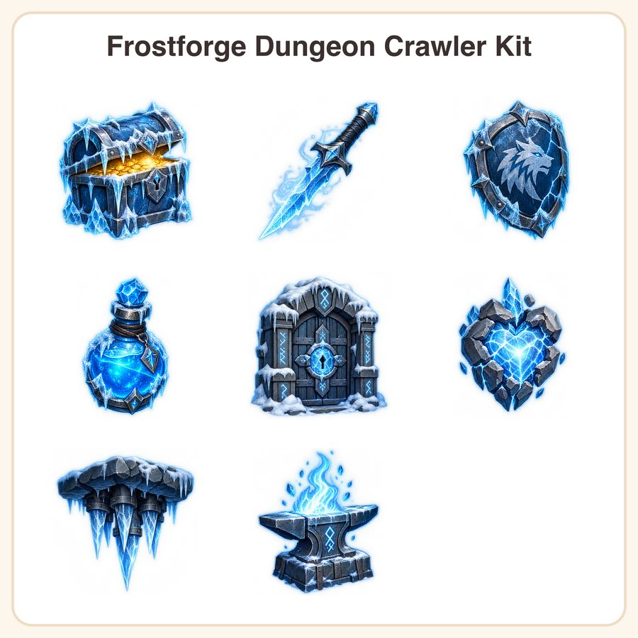

$5.99
View on Etsy❄️ Stop stalling your winter level — drop in a full icy-cave asset set and get back to building your game today. The Frostforge Dungeon Crawler Kit is a hand-painted-style fantasy sprite pack in a chunky, painterly frost-blue and steel palette with subtle ice-glow outlines. Perfect for solo devs crafting roguelike or dungeon-crawler winter levels who need polished game icons without the weeks-long art production cycle. What's included (8 unique sprites): • Frozen treasure chest, lid ajar with a golden glow • Ice shard dagger trailing frost mist • Cracked frozen shield with wolf sigil • Glowing blue mana potion with frost condensation • Snow-covered dungeon door with rune-carved ice lock • Frost golem heart — pulsing crystal core, cracked shell • Icicle-trap spike cluster (cave ceiling tile) • Frostforge anvil with blue-white flame and embers File formats & sizes: • 8 x PNG sprites at 1024x1024px (transparent background) • 8 x PNG sprites at 512x512px (transparent background) • 1 x full preview sheet (JPG) for quick reference • Delivered as a zipped folder, instant digital download How to use: Drag straight into Unity, Godot, GameMaker, RPG Maker, or any engine that supports transparent PNGs. Sprites are pre-sized for UI icons, inventory items, and in-level props — resize freely to fit your project. License: Personal and small-business commercial use permitted, including in games you sell or publish, up to 500 units/copies sold. Do not resell, redistribute, or share the raw asset files themselves, whether alone or bundled as a standalone asset pack. A note on how this was made: These designs were created by our shop with the help of AI image-generation tools, then curated and prepared for game-ready use. We're upfront about this so you know exactly what you're getting. Questions before you buy? Message us — happy to help you figure out if this pack fits your project.